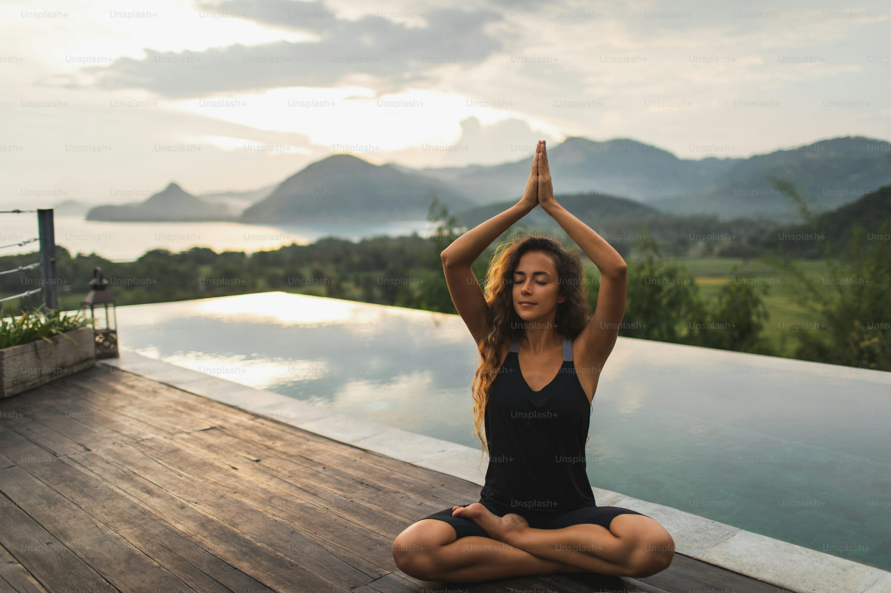

Cultura Meeting
“El poder femenino en la comunicación, el arte y la cultura.”
16 DIC - 18 DIC
MEDELLÍN - ANT
Durante tres días, mujeres creadoras, comunicadoras, artistas y pensadoras se encuentran para compartir experiencias, obras y visiones que inspiran una nueva manera de entender la cultura contemporánea.
Adquiere tu boleta
